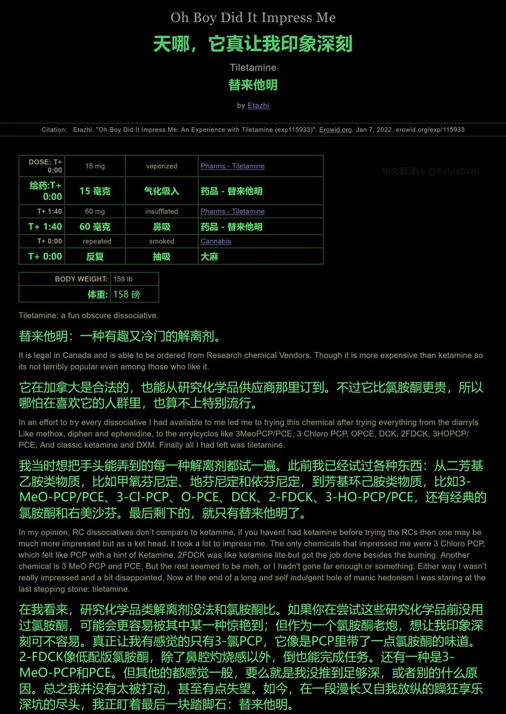
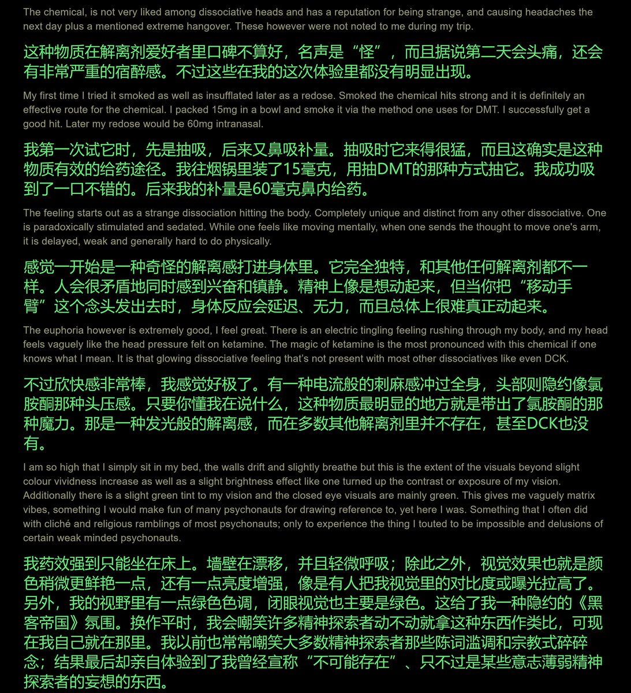
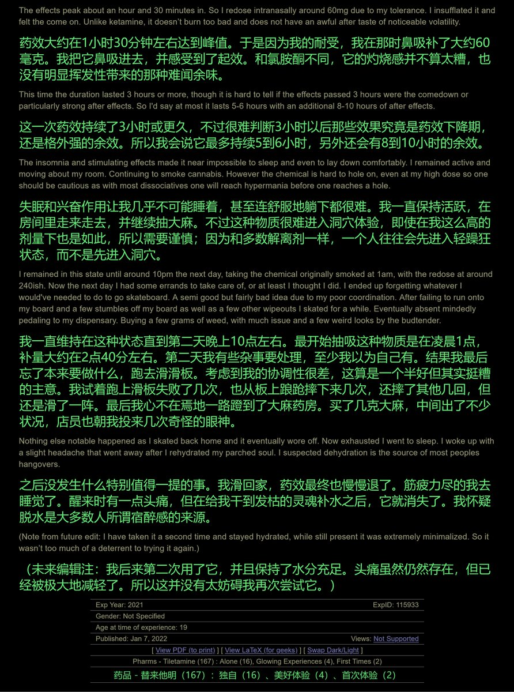
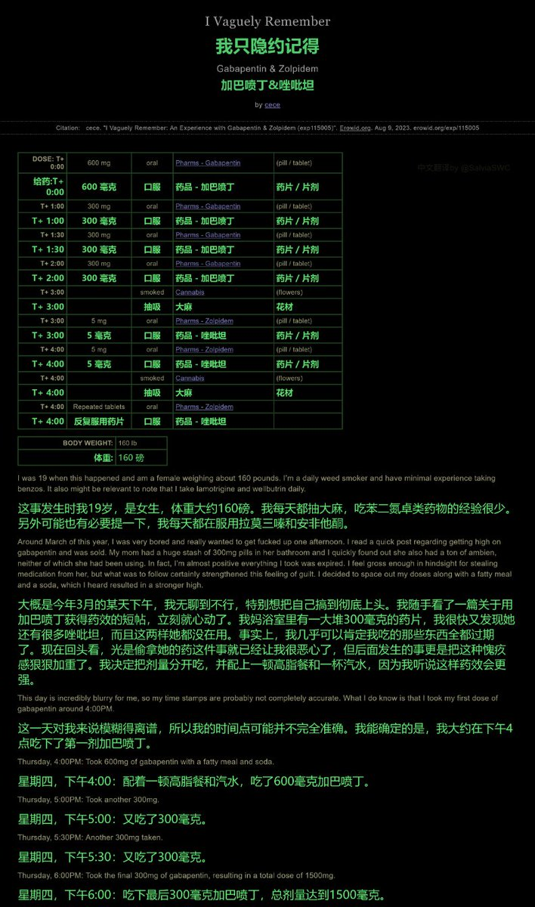
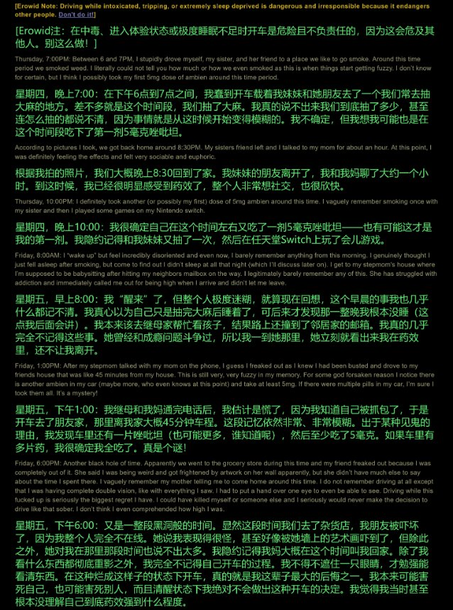
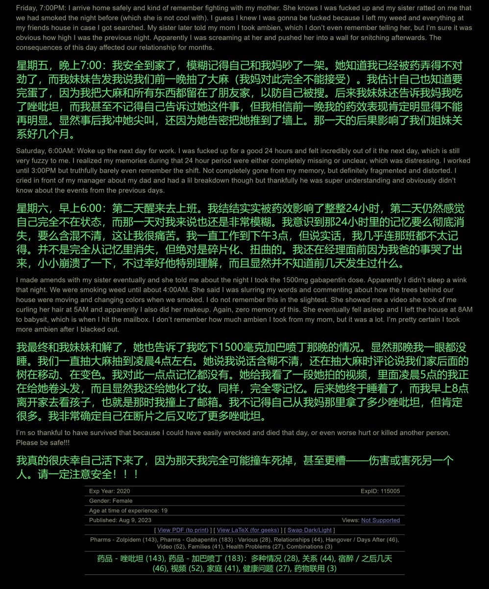

药物报告day12——替来他明的药效
一外国小哥吸食了高纯度的的替来他明晶体，这是他的身体发生的变化(bushi)
好像是典型的解离剂体验呢。剂量足的话，药效是够的，但是副作用较多，后效较长，敬请大家注意🤓
文字版链接： https://t.co/gwYZalwHKl 持续关注FreeODwiki，了解更多报告！
#上头电子烟

一外国小哥吸食了高纯度的的替来他明晶体，这是他的身体发生的变化(bushi)
好像是典型的解离剂体验呢。剂量足的话，药效是够的，但是副作用较多，后效较长，敬请大家注意🤓
文字版链接： https://t.co/gwYZalwHKl 持续关注FreeODwiki，了解更多报告！
#上头电子烟






药物报告day11——联用加巴喷丁和唑吡坦导致断片
“我”吃了总共5 * 300 mg的加巴喷丁片后，药效让“我”逐渐失控。“我”又去吃唑吡坦，不知吃了多少，最终彻底失控断片。
文中的行为属于典型的危险od行为，是反面教材哦！这会伤害自己、破坏家庭、甚至危害社会，请大家引以为戒🥺
https://t.co/5V7I8KfKnL https://t.co/Sx3q0SbdJI https://t.co/rXAUnNmFwm
“我”吃了总共5 * 300 mg的加巴喷丁片后，药效让“我”逐渐失控。“我”又去吃唑吡坦，不知吃了多少，最终彻底失控断片。
文中的行为属于典型的危险od行为，是反面教材哦！这会伤害自己、破坏家庭、甚至危害社会，请大家引以为戒🥺
https://t.co/5V7I8KfKnL https://t.co/Sx3q0SbdJI https://t.co/rXAUnNmFwm